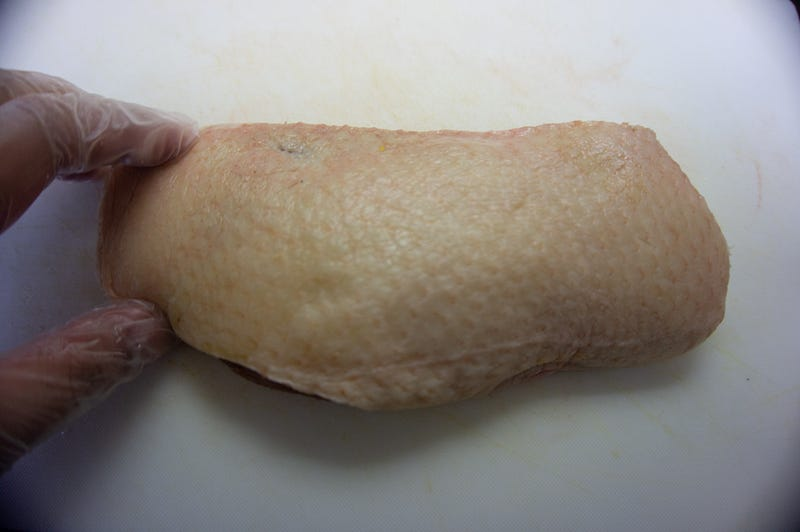
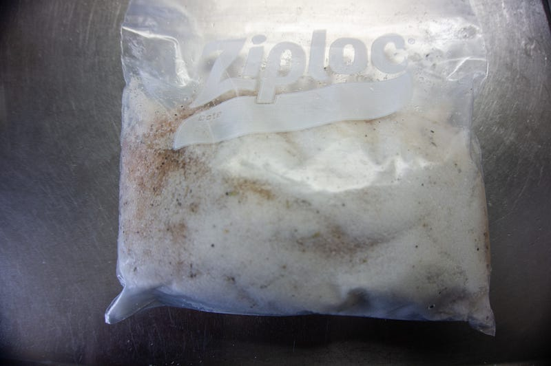
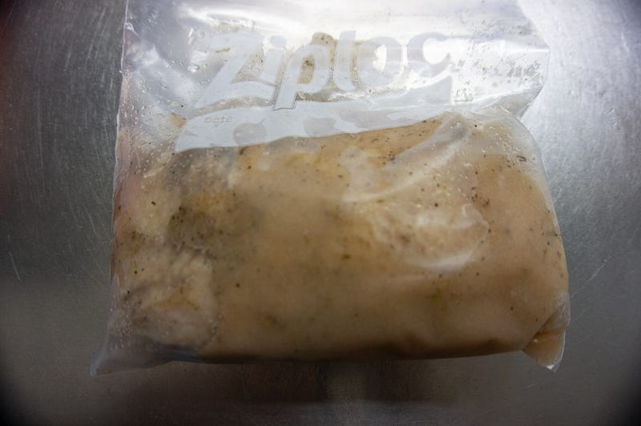
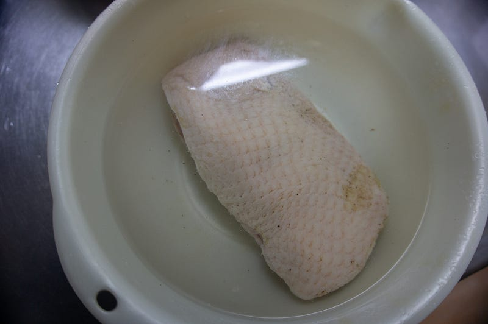
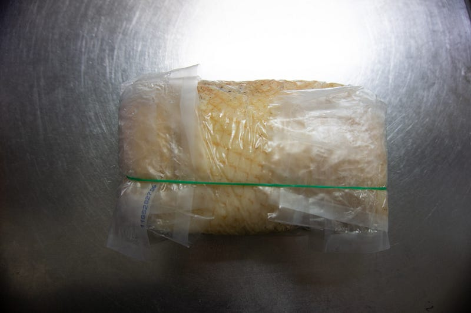
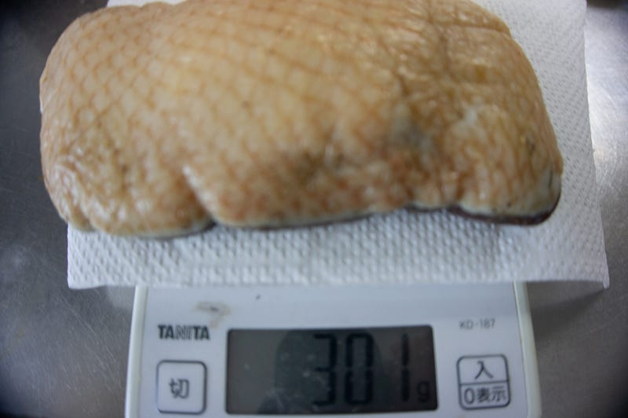
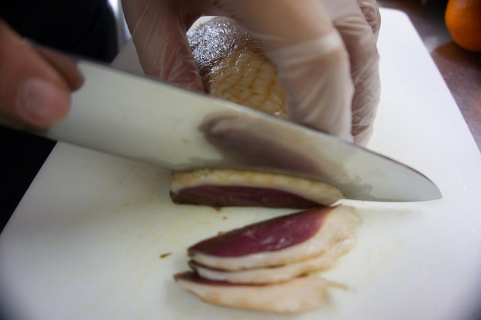
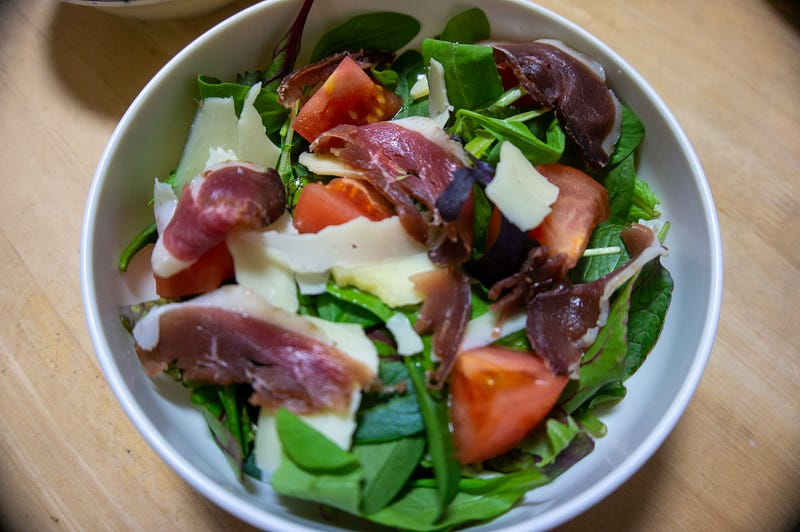

自家製 鴨プロシュート
自家製 鴨プロシュート
正月に実家で食べるために用意した鴨肉がなぜかひとつだけ冷凍室に余ってしまってどうしようかと思っていたら、YouTubeで鴨プロシュートの作り方を見つけてしまったので自分もやってみることにした。
ちなみに物の本によるとプロシュートはイタリアでは基本的には豚肉の生ハム全般を指すみたいだが、ここでは「燻製処理をしてない生ハム」という意味でプロシュートと呼ばせてもらう。
レシピを見てみると、基本的には塩漬け→乾燥→熟成のみっつのステップを踏めばよいらしい。
他のレシピも参考にして見てみたのだが、塩の量については二つ考え方があってひとつは「量は適当でいいので、とにかく塩に埋めた上で、漬けたあとで一回塩出しをする」もうひとつは「重量の3%くらいのぴったりの量をはかって漬ける」というものだった。
僕を知っている人は僕がどちらを選ぶか一目瞭然だろう。「量は適当」なほうでいきました。

というわけでまず鴨ですね。こちらはある程度反対側をトリミングして、邪魔になりそうな膜や少しだけ見えていた血管を取り除きました。

それをとにかく鴨全体が埋まるくらいの塩に入れます。鴨肉が見えていてはいけない、とレシピでは言ってました。
台所にあった適当なハーブもいれました。もちろん本当は色々入れた方がよりそれっぽくなりますけど、まぁいいだろう、ということで。確か胡椒、パセリ、クミンを入れた。

丸一日漬けた状態。血っぽい色合いが若干まじっていて、それが少しずつでてきたのがわかる。

塩出し中。今回は1時間ほどであげた。勘です。

ピチットシートの登場。鴨肉をピチットシートに包んで、ここから数日冷蔵庫で保存する。
ピチットシート本当にすごすぎる。知らない方にむけて説明すると、これは肉や魚から水分だけを吸収してくれるというすぐれもの。吸収された水分はこのシートの中にあるなにがしかに溜めてくれるのだ。とにかくすごい。
なおこれを作っているのは避妊具で有名なオカモトである。これを知って余計尊敬の気持ちを持った。
ところで重要なのはピチットシートは水分を吸収してくれるが、別に殺菌をしてくれるというわけではないことである。なので、保存している間は毎日必ずシートを取り替える。今回の場合は都合4日間この作業を繰り返した。

三日強で353gから始めた鴨肉が301gになり、そこからほとんど大きな変化を見せなくなったので一旦ピチットシートははずした。

とりあえず腐ったりしてないかの確認も含めて一旦中の状態を確認。
中はまだ赤さがめだつという感じ。堅さも乾燥はしているけどまだそれほどでない。こわごわ少しずつ食べてみたけど、特にいやな味はしなかったので成功した模様。ただ、鴨のあの鴨たるゆえんの味が強い。凝縮されている感じ。ここからはキッチンペーパーに包んで冷蔵庫において、熟成に入る。
これをこの間やった肉会に持って行ったのだけど、まだ熟成期間が三日くらいで正直足りていなかったようだ。まだ鴨の血っぽいにおいが強かった。なので多分肉を食いに来てた皆さんにはあまりうけなかった。
役1年半ぶりくらいに肉会をやってきました。基本的には自分が肉を低温調理したり、肉を焼きたい、という欲望をかなえるために開催しているのですが、前回まではbuildersconのマーケティングをついでに行う目的でしたいところを今回は単独開催（？…medium.com
それが、である。
その次の週に作ったサラダに合わせてみたら熟成が進んで色ももっと飴色になり、匂いも落ち着いて市販のそれっぽくなっていた。すごい。
切るときには皮目の脂もパリパリという感じになっていて、何かが変わった感じがする。肉の色ももっと紫色がかった深い赤にかわっていて「あ、これ見たことあるわ」感がある。そして鴨独特の匂いもおちついて、とてもおいしいハムになっていた。最高じゃんか。ちなみに肉会から持ち帰ったラクレットチーズが見かけのわりと癖があるんだけど、鴨プロシュートにとても合う。

あと、これをおいしく食べるにはなるたけ薄く切ることです。そのほうが絶対的にうまい。
これでプロシュートの作り方がわかったので、突然必要となった時以外にスーパーで下手な生ハム類を買う必要がなくなってしまった。
時間は賞味2週間弱かかるけど、基本的にはおいておくだけだし、正直こっちのほうがうまい。冷蔵庫になぜか鴨胸肉があまってしまうような家庭（？）にはおすすめです。